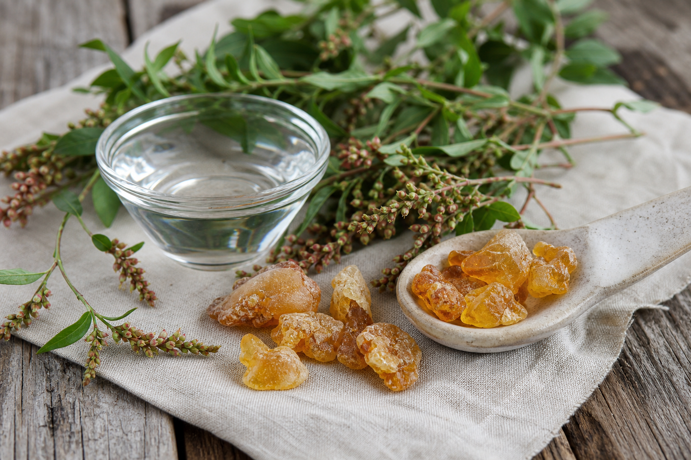
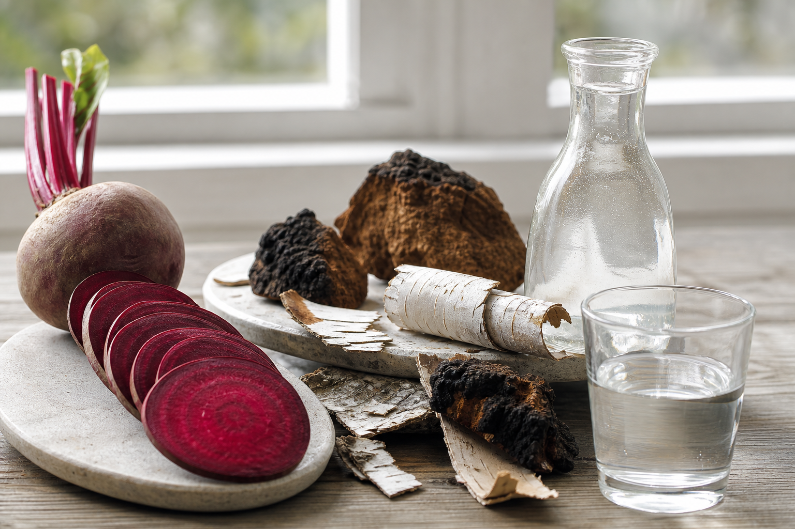
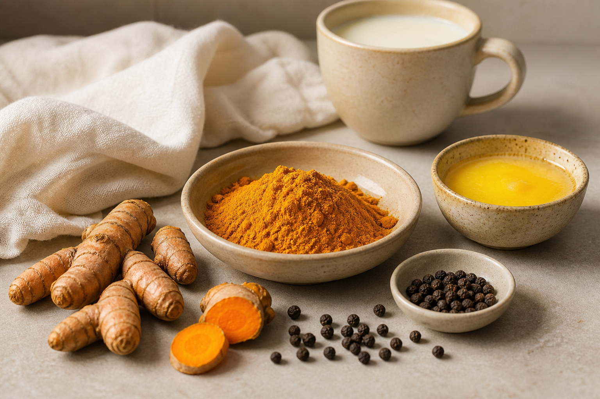

Живица сосны
Смола, которую пили до еды
В сибирской традиции живицу растворяли в воде или жевали натощак при воспалении в теле — от суставов до лёгких. Её связывали с уменьшением вязкости крови и тихого хронического воспаления.
7 веществ, которые знахари давали первыми — до любого лечения, до любой практики.
Сначала кровь
Все хотят начать с очищений, дыхания, питания и работы с телом. Но всё это работает через кровь. Она либо доносит питание и кислород до каждой клетки. Либо нет.
В знахарской традиции первым давали не сбор от конкретной болезни, а то, что делало кровь живой. Ниже — семь веществ, с которых начинали.

Натуральные вещества
Живица, спорыш, свёкла, чага, берёзовый сок, куркума с перцем и гхи — это не модные добавки, а простые вещества, вокруг которых веками строилась работа с телом.
7 веществ
Смола, которую пили до еды
В сибирской традиции живицу растворяли в воде или жевали натощак при воспалении в теле — от суставов до лёгких. Её связывали с уменьшением вязкости крови и тихого хронического воспаления.
Сорняк, который топчут ногами
Знахари называли его “трава от ядовитой крови” и давали при высыпаниях, аллергиях, усталости после болезни. Самое сильное часто лежит прямо под ногами.
Когда кровь становилась ленивой
Не варёная и не сок из пакета. Сырая свёкла поддерживает сосуды и капиллярное кровообращение. Знахари не говорили языком химии, но знали: свёкла должна быть живой.
Чёрная кровь берёзы
Чагу томили, а не кипятили. Её давали как вещество, которое умеет работать с “грязью” и поддерживает сосуды изнутри.
При горячей крови
В аюрведической традиции куркуму не давали отдельно: только с чёрным перцем и жиром. Без этой связки она проходит через тело и почти не усваивается.
Кровь земли, которая просыпается
Свежий сок собирали в первые весенние дни. Не пакетированный и не пастеризованный, а живой, утренний, только что из дерева.
Носитель света в кровь
Гхи считали носителем лекарств: оно помогает питанию идти глубже. Первый шаг — чтобы кровь перестала получать мусор через уставший кишечник.

Главная мысль
Все эти вещества работают. Но они работают как пластырь, если продолжать кормить кровь тем, что её загрязняет.
Самые быстрые изменения Наташа видела у тех, кто менял питание, а не добавлял полезное поверх прежней еды.
Переход без насилия
На вебинаре Наташа рассказывает, как менять питание так, чтобы тело само начало просить живую еду: без фанатизма, без голодания и без ощущения, что надо “есть траву и страдать”.

Следующий шаг
Посмотри вебинар и пойми, как перейти к живому растительному питанию через понимание тела, а не через силу воли.
Смотреть вебинар